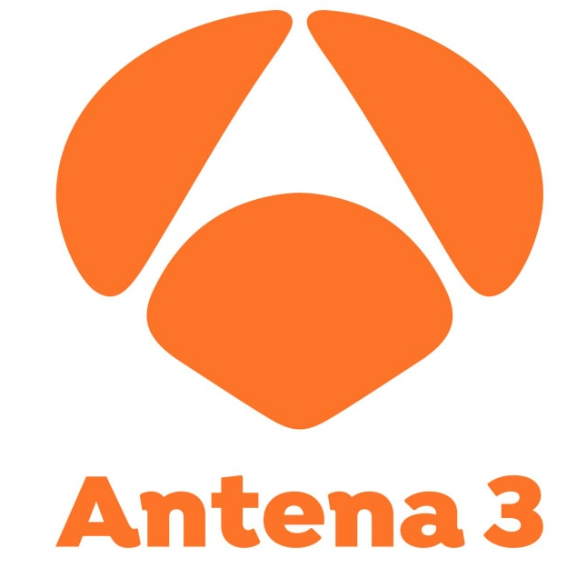
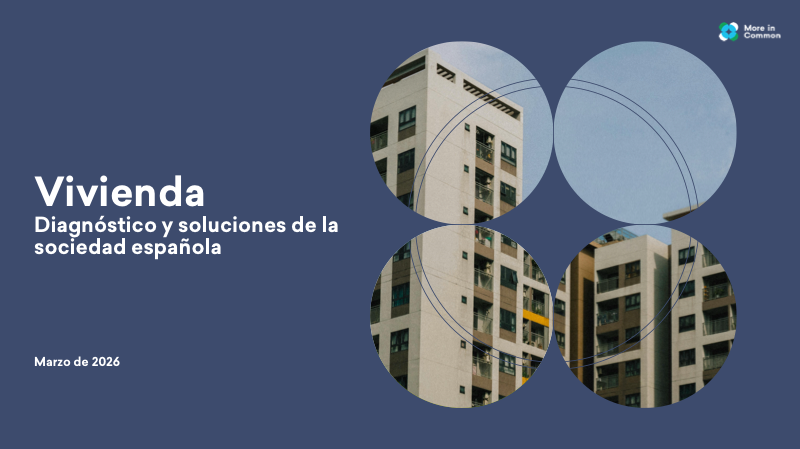
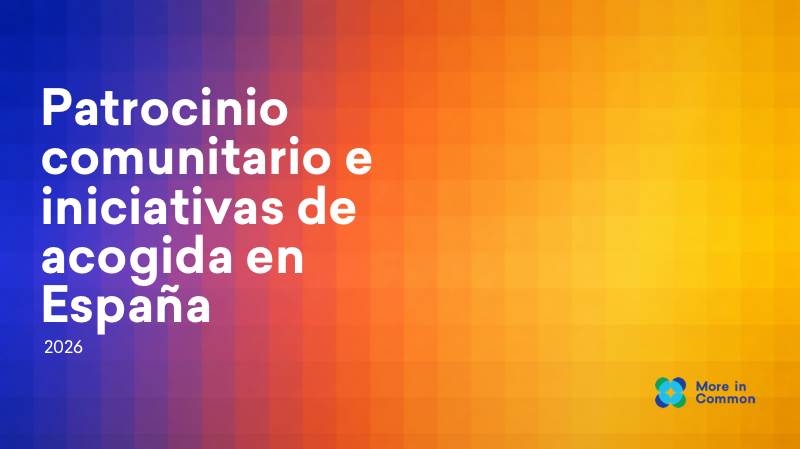
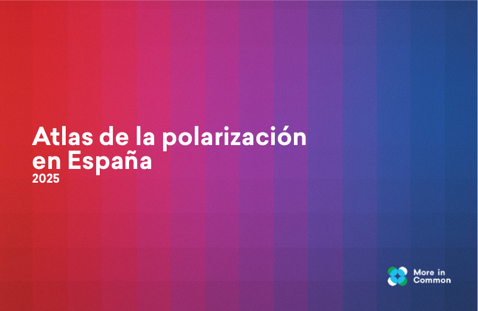

Nuestro trabajo en medios


Utilizamos la investigación social para entender a la sociedad española, profundizando en las dinámicas que la dividen y cohesionan.
Somos una organización internacional sin ánimo de lucro que trabaja para construir sociedades más unidas y resilientes. Mediante investigación rigurosa, identificamos las fuerzas que dividen y las que unen a las comunidades.
En España, donde estamos constituidos como asociación, nos enfocamos en entender las actitudes, valores y experiencias de la ciudadanía para ofrecer evidencia útil a la sociedad civil, los medios y los actores institucionales. Además, aspiramos a democratizar la investigación sociológica y demoscópica de calidad para actores y personas que, a menudo, carecen del tiempo y los recursos para acceder a ella.
Conoce al equipo →Tenemos más en común que aquello que nos divide
Estudios realizados con técnicas cuantitativas y cualitativas para analizar las actitudes y valores de la sociedad española.

ViviendaUn estudio en profundidad sobre la crisis de la vivienda en España: percepciones, causas y apoyo a las soluciones propuestas.
Ver estudio →
AcogidaEstudio sobre las iniciativas de patrocinio comunitario y acogida en España y las oportunidades para fortalecer la integración.
Ver estudio →
PolarizaciónUn análisis exhaustivo que cartografía las dinámicas de polarización en la sociedad española y los puntos de consenso.
Ver estudio →Nuestro trabajo en medios

Análisis, reflexiones y datos sobre la sociedad española desde nuestro Substack.
Con una muestra representativa de más de 5.700 encuestados, analizamos las percepciones ciudadanas sobre la crisis habitacional.
MigraciónExploramos el patrocinio comunitario como vía de acogida de personas refugiadas y las actitudes de la sociedad española.
InternacionalAnálisis de la segmentación de los votantes de Trump realizada por More in Common en Estados Unidos.
Ofrecemos servicios de investigación social a organizaciones que buscan entender mejor a la ciudadanía.
Diseño y ejecución de encuestas a gran escala con muestras representativas de la población española.
Identificación de grupos poblacionales con valores y actitudes compartidas mediante técnicas avanzadas.
Estudios cualitativos a través de grupos de discusión y entrevistas en profundidad para explorar actitudes y percepciones.